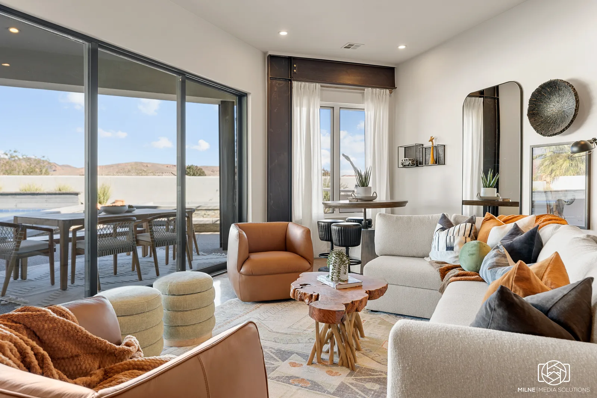
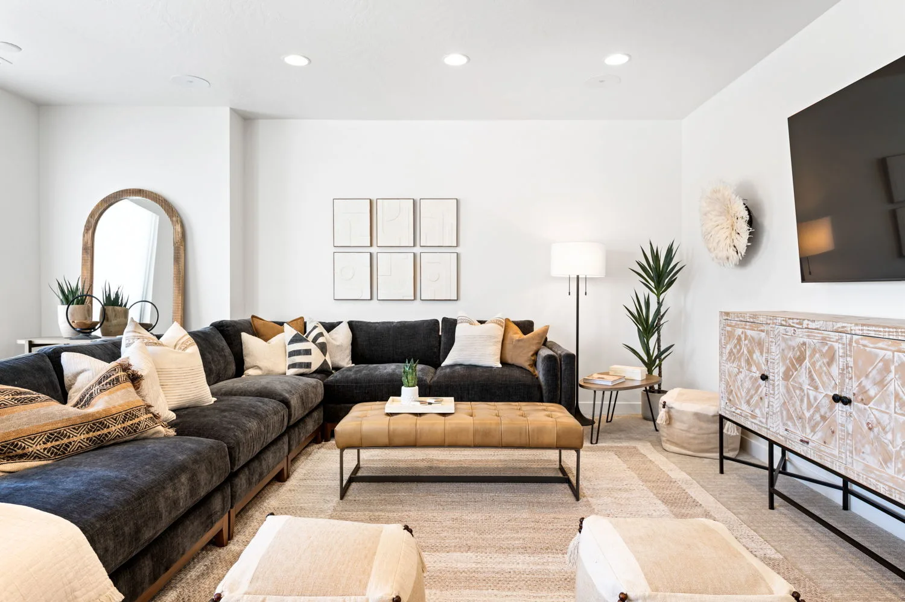

Time Slows Down
Spaces feel settled, comfortable, and easy to live in, giving everyone permission to step away from everyday demands and be fully present.
Second home interior design
We design second homes that bring the people you love together and create the setting for lasting memories.
A second home is more than a beautiful place to stay. It is the container for memories your loved ones will cherish forever.
Spaces feel settled, comfortable, and easy to live in, giving everyone permission to step away from everyday demands and be fully present.
Thoughtful gathering spaces make shared meals, late conversations, games, celebrations, and quiet time together feel natural.
The home becomes part of the family story—a place people look forward to returning to and where familiar rituals become lasting memories.
Intentional home principles
Every decision is guided by the experience the home should support, the architecture that defines it, and the environment that surrounds it.
How you want to spend your time there guides the way rooms function, flow, and bring people together.
The proportions, materials, and character of the home establish what the interiors need to honor and build upon.
Light, color, texture, and views connect the interiors to the setting beyond the walls.
Selected work
A few examples of how we turn second homes into finished spaces designed to bring people together and create lasting memories.

A warm, collected home shaped by sculptural forms, natural materials, and details that feel grounded in the surrounding landscape.
Case study in development
A bright vacation home with layered gathering spaces, comfortable bedrooms, and outdoor areas designed for time together.
Case study in developmentFull-service interior design
Your time at a second home should not be spent meeting deliveries, tracking orders, or making hundreds of disconnected decisions. We hold the vision and carry it through every phase.
We learn how you want to live, what feels like you, and what the home and its setting call for—then build one complete design direction.
We source, order, and coordinate the furniture, lighting, art, window treatments, bedding, accessories, and supporting details.
We receive and inspect the pieces, place the furniture, hang the art, make the beds, and style every surface before you walk in.
“I can’t stop looking around with a big smile on my face.”CharReese Bradshaw · 1584 Design client
Our best second-home projects happen when owners care deeply about the time they’ll spend there with the people they love, trust professional design expertise, and are ready to delegate the hundreds of decisions required to bring the home together.
As early as practical. Early involvement gives us more influence over space planning, budget allocation, lead times, and the details that make the finished home feel cohesive.
If the property is designed primarily around your own family and friends, the second-home path is still the right one. We can account for occasional guests without letting rental considerations define the home.
You provide the personal context and react to curated directions. We manage the detailed sourcing, ordering, coordination, installation, and styling.
Yes. We are based in St. George and serve the Zion corridor and Las Vegas, with select second-home projects accepted nationwide.
Tell us about the property, how you hope to use it, and what you want it to feel like. We will assess whether the project is a strong fit.